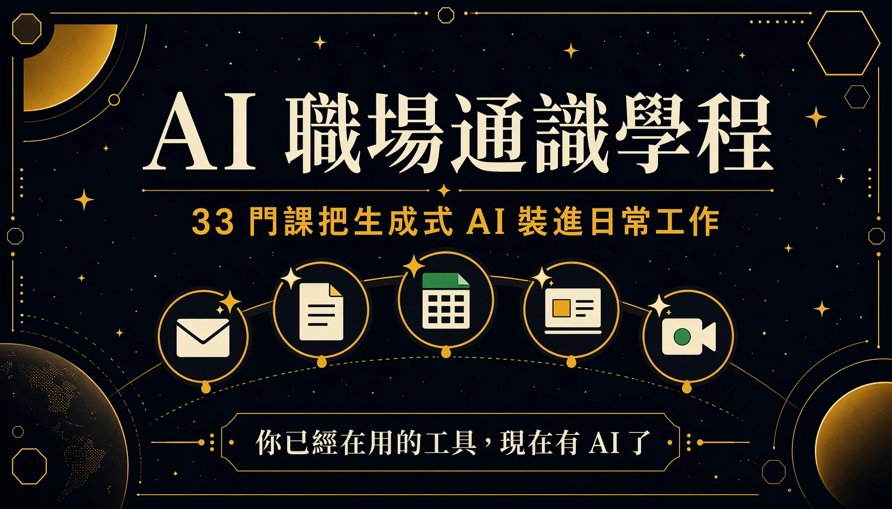

The AI Workplace Literacy track carries the largest course count in the Google Digital Talent Exploration Program, at 33 courses. Its focus is putting generative AI to actual use in daily work, and it states outright that no technical background is required. The content builds AI fundamentals from zero, covering Gemini across each Workspace app, advanced NotebookLM usage, and strategic scenarios at management level. This entry groups the 33 courses into four clusters and pulls out the core points of each course.
This is the first of three track records for the Google Digital Talent Exploration Program. The program overview and registration details sit in the overview entry, with the other two covering digital marketing and Google Cloud.

# What the Track Teaches
The track opens with the hierarchy of AI terminology, moves through how models work and how enterprises adopt them, and lands on hands-on operation inside each Workspace app. Five of the courses, the "Generative AI" series, form the official learning path for the Google Cloud Generative AI Leader (Gen AI Leader) certification and run in a defined order; finishing all five and completing the survey opens registration for the certification exam. The remaining courses fill in the hands-on layer that makes the material immediately usable, teaching how Gemini and NotebookLM apply to writing, research, meetings and presentations — the things done every day.
# One. Generative AI Certification Series (5 courses, Gen AI Leader)
This cluster sets out to teach a full picture of AI that needs no programming background, covering terminology hierarchy, how models operate, enterprise adoption strategy, and the principles of responsible AI. The five run in sequence and form the certification spine of the track.
- Generative AI: Beyond the Chatbot — Treats generative AI as a technology that gets embedded into all kinds of tools, where the same Gemini model serves the Gemini app, the Workspace edition and the BigQuery edition. The four uses of generative AI: create, summarise, discover, automate. The human-centred principle is to use AI to strengthen strategic thinking and automate repetitive tasks, with decision authority left with people.
- Generative AI: Understanding the Fundamentals — The hierarchy where AI contains machine learning and machine learning contains generative AI; three learning methods (supervised, unsupervised, reinforcement); five elements of data quality; six limitations of foundation models (data dependency, knowledge cutoff, bias, fairness, hallucination, edge cases) and the techniques for working around them (grounding, RAG, prompt engineering, fine-tuning, human-in-the-loop).
- Generative AI: Mastering the Technology Behind It — Centres on a five-layer architecture: infrastructure, model, platform, agent, application — remembered as foundation, core, glue, driver, vehicle. Two kinds of agent (conversational and workflow), plus edge computing and Gemini Nano running on-device.
- Generative AI Apps: Transform Your Work — Three levels of prompt reuse (saving templates, applying them across all conversations, isolating contexts with Gems); zero-shot, one-shot and few-shot prompting along with role prompting; the three RAG steps of retrieve, augment, generate.
- Generative AI Agents: Transform Your Organisation — Sampling parameters (temperature, Top-K, Top-P, token conversion); the three agent components (foundation model, reasoning loop, tools); ReAct and CoT as two reasoning approaches; the enterprise platforms Vertex AI Search and Agentspace.
# Two. Gemini for Workspace (9 courses)
This cluster covers what Gemini can do once embedded in each Workspace app, all running on business scenarios from the same fictional company. The emphasis falls on where each tool's capability ends, and on how prompt wording shapes the result.
- Introduction to Gemini for Google Workspace — The series opener: Gemini's four capabilities, and human review before publication as the countermeasure for hallucination risk.
- Gemini in Gmail — "Help me write" and "refine email." The key point is that prompt wording decides the addressee — writing "welcome the new VP" gets read as writing to the VP in person, so it has to become "draft an announcement."
- Gemini in Google Docs — "Help me write" plus proofreading; the five refinement tools (tone, summarise, elaborate, shorten, rephrase); proofreading checks word choice, tone and sentence structure together.
- Gemini in Google Sheets — Generating table templates from text. The scope is limited: it produces the table skeleton, and formatting, formula generation and in-cell images all stay out of reach. Prompts should give instructions and ask few questions.
- Gemini in Google Slides — Generating presentation images with AI; a good prompt covers object, setting, distance, material and background; four styles (photography, sketch, vector art, watercolour).
- Gemini in Google Meet — Generating meeting backgrounds, studio effects correcting lighting and image quality, translated captions — captions visible only to you, with each participant free to pick their own language.
- Gemini in Google Drive — Searching files, asking questions against a file, generating summaries; using @ to compare several documents at once (three supplier bids, for example).
- Create Compelling Video with Google Vids — The AI video tool built into Workspace, running from prompt to outline, template, style and draft, producing a storyboard with media, text, script and audio track.
# Three. The NotebookLM Series (11 courses)
The core of this cluster repeats one thing throughout: NotebookLM answers only from the sources you upload, attaches traceable citations, and says honestly that it does not know when nothing matches. The whole cluster is about turning a pile of scattered material into a research assistant you can question, view and listen to.
- Intro to NotebookLM — The three-column interface (sources, chat, studio); every key fact carries a citation that jumps back to the original passage; notes can be converted into sources so AI helps develop the idea further.
- Project Notebooks — Consolidating scattered project material into a team knowledge hub; source limits of 50 on the standard tier and 300 on Pro; usable as a living document that keeps taking new sources.
- Discover Sources — With no documents at hand, describing the topic lets the system gather web sources automatically and offer a recommended list with summaries for one-click import.
- NotebookLM Reports — The second version suggests report formats dynamically based on the content of your sources; including only the sources you tick controls the scope of material drawn on.
- NotebookLM Mind Maps — Turns sources into an interactive concept map automatically, where clicking a concept opens a conversation already carrying that context — well suited to unfamiliar material.
- NotebookLM Video Overviews — Pulls images, charts and figures out of the sources on its own initiative and cuts them into an explanatory video hosted by an AI presenter, with the focus topic and audience specifiable.
- Customer Insights with NotebookLM — Consolidating 500-plus customer service transcripts into a single PDF for analysis, across languages as well; the deep-dive conversation is an interactive podcast that takes voice interruptions and follow-up questions.
- NotebookLM for Competitive Edge — Four steps of competitive intelligence: gather public material, use the YouTube integration to ingest whole videos directly, add internal documents for differentiation, extract insight, then build a SWOT.
- NotebookLM for Market Research — Three marketing workflows: customer feedback analysis, market and competitor research, content ideation, all driven by worked examples.
- Find the Story in Your Data — Treating it as a data detective: ground every claim, find the headline, connect the dots; prompts carry a role and a purpose, and naming two data points surfaces the correlation.
- Research Hacks with NotebookLM — Three research steps: import, strategic questioning (identifying drivers, challenges, key themes), audio review; the depth of the question sets the depth of the insight.
# Four. Advanced Gemini Scenarios (8 courses)
This cluster is short practical talks, one technique each, demonstrating Gemini, Gems and Deep Research on specific workplace tasks, with a badge challenge attached to each completion.
- Content Generation with Gemini Made Easy — The Docs side panel clears writing blocks through ideation, outlining and drafting; referencing Drive files in the prompt produces a contextualised draft.
- Exec Summaries with Gemini Gems — Building a Brevity Gem that turns messy material into something an executive can read, on the Smart Brevity frame (headline, What's New, Why It Matters).
- Poke Holes in Your Strategy — Having AI play a role to find weak points in a strategy; the formula assigns the role, caps the output at the top three, and asks for a direction of critique; four reviewing roles running from finance to marketing.
- Presentation Scripts with Gemini — Four steps for a presentation: research, successive prompts to converge, an outline with a specified section count, then export to Docs and expand section by section into a script.
- Supercharge Research with Gemini — Deep Research as a research partner, with three prompt levers: role, format, sources (pointing it at Reddit for developer reaction, for instance); after submission it offers a research plan for editing before it starts.
- Get Your Competitor's Playbook in Minutes — Deep Research searches and synthesises across the web autonomously; a good prompt carries concrete scope (industry, timeframe, quantity), and the resulting report converts into strategic recommendations.
- Streamline Event Planning with AI — Using AI for event organisation; logistics tasks can carry rules and an optimisation goal at the same time (arrive two hours before departure, arrange shared rides to cut the number of trips).
- Your Personal Feedback Agent — Using Gems to build a "Work with Me" agent that packages the baseline feedback you habitually give into a shareable link in your email signature, so meetings start from the strategy discussion directly.
(Also available: Guided Learning with Gemini, which treats Gemini as a collaborative thinking partner, using probing questions to connect new material to existing knowledge — suited to exam preparation and following an interest.)
# Three Things Worth Remembering
- Gems package you into a shareable AI colleague — Feed Meet transcripts, documents and emails to Gemini, have it derive your communication style, your way of giving feedback and your way of deciding, and build that into a Gem that goes in your signature. Colleagues run it before a meeting, the baseline questions you always ask have already been asked, and the meeting can start from the strategy discussion.
- Deep Research completes a full day of competitor research in the time it takes to drink a coffee — Give it one goal and it opens hundreds of tabs itself, filters, and synthesises a structured report. Three prompt levers (role, format, sources) combined with the human-in-the-loop design of "offer a research plan for editing before starting" make it concrete and easy to operate.
- NotebookLM turns 500 customer service transcripts into a project expert you can question and listen to — NotebookLM can convert 500 customer service transcripts into a project assistant you can question and listen to, and its defining characteristic is being grounded: answering only from uploaded sources, attaching traceable citations, and answering honestly with "I don't know" when nothing relevant exists. The same material yields three modes of absorption — reading, watching, listening (mind map, explanatory video, interactive podcast).